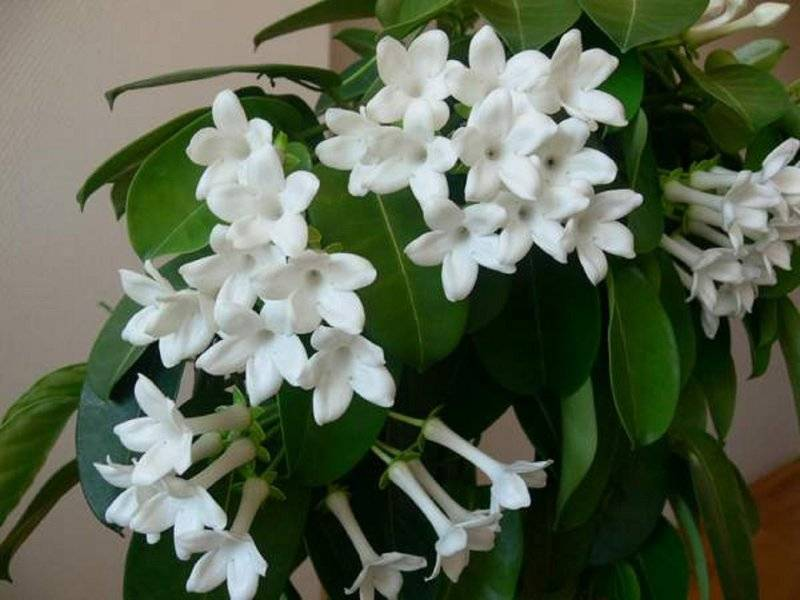

Цветущие растения
Цветущие растения — это настоящие украшения наших домов и садов. Их яркие цветы и нежный аромат создают неповторимую атмосферу уюта и радости. От нежных фиалок до величественных орхидей — каждый цветок имеет свою уникальную красоту и характер.
Особенности цветущих растений
Разнообразие цветов
От нежных пастельных тонов до ярких контрастных сочетаний. Цветущие растения предлагают бесконечную палитру красок для любого интерьера.
Сезонность цветения
Разные растения цветут в разное время года, позволяя наслаждаться цветами круглый год при правильном подборе коллекции.
Ароматерапия
Многие цветущие растения источают приятные ароматы, создавая естественную ароматерапию в помещении.
Особенности ухода
Цветущие растения требуют особого внимания, так как цветение — энергозатратный процесс для растения.
Освещение
Большинству цветущих растений нужно яркое рассеянное освещение 6-8 часов в день для обильного цветения.
Полив
Регулярный, но умеренный полив. Избегайте переувлажнения и пересыхания почвы.
Подкормка
Во время цветения нужны удобрения с повышенным содержанием фосфора и калия.
Обрезка
Своевременное удаление увядших цветов стимулирует новое цветение.
Популярные комнатные цветущие растения
Герань
Неприхотливое растение с яркими цветами. Цветет практически круглый год при хорошем освещении.
Сенполия
Комнатная фиалка с бархатистыми листьями и нежными цветами. Любит рассеянный свет.
Спатифиллум
Элегантное растение с белыми цветами-парусами. Очищает воздух, теневыносливо.
Гибискус
Китайская роза с крупными яркими цветами. Требует много света и пространства.
Сезонность цветения
Подбирая растения с разным периодом цветения, можно создать сад непрерывного цветения:
Весна
Примулы, тюльпаны, гиацинты, азалии
Лето
Петунии, пеларгонии, бегонии, фуксии
Осень
Хризантемы, астры, цикламены, вереск
Зима
Пуансеттии, камелии, орхидеи, цинерарии
Распространенные проблемы
Отсутствие цветения
Причины: Недостаток света, неправильная подкормка, слишком большой горшок
Решение: Увеличьте освещенность, используйте фосфорные удобрения
Опадение бутонов
Причины: Резкая смена условий, сквозняки, пересушивание почвы
Решение: Стабильные условия, регулярный полив, защита от сквозняков
Вредители на цветах
Причины: Тля, трипсы, паутинный клещ
Решение: Регулярный осмотр, обработка инсектицидами, повышение влажности
Советы по выбору
Для начинающих
Герань, каланхоэ, бальзамин — неприхотливые растения, которые легко выращивать.
Для тенистых помещений
Спатифиллум, сенполия, бегония вечноцветущая — хорошо адаптируются к недостатку света.
Для солнечных подоконников
Гибискус, пеларгония, катарантус — требуют много света для обильного цветения.
Правильно подобранные цветущие растения будут радовать вас своими красками и ароматами круглый год, создавая в доме атмосферу праздника и уюта!